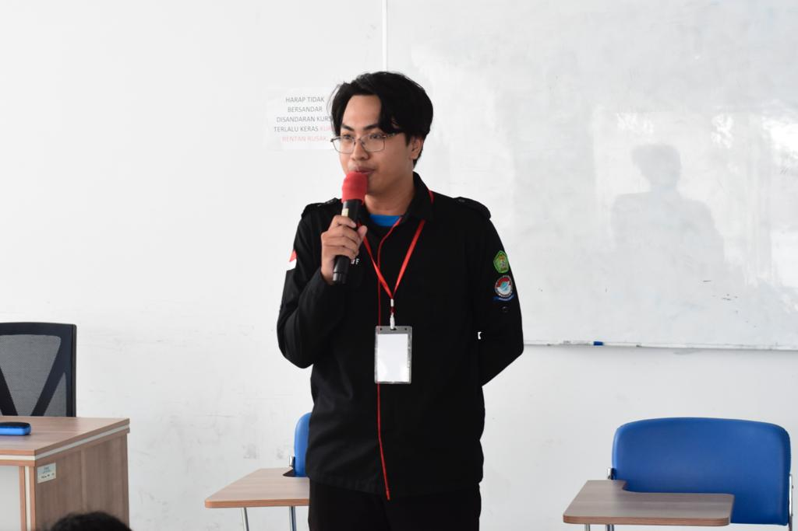

👋 Halo, perkenalkan saya
Mahasiswa Universitas Mulawarman dengan minat besar pada teknologi informasi, literasi digital, dan pemeliharaan infrastruktur jaringan. Siap berkontribusi menciptakan solusi teknologi yang inovatif.

Saya adalah Mahasiswa Informatika di Universitas Mulawarman yang berdomisili di Samarinda. Saya sangat antusias terhadap perkembangan teknologi informasi dan perannya dalam transformasi digital.
Latar belakang saya menggabungkan pengetahuan teknis dari pendidikan Teknik Komputer Jaringan (TKJ), pengalaman nyata dalam pemeliharaan jaringan dan pengajaran, serta *soft skills* kepemimpinan dari keterlibatan aktif di berbagai organisasi kemahasiswaan.
Aktif memimpin & mengelola tim di HIMA Unmul
Cepat belajar & berorientasi pada pemecahan masalah
Jejak akademis, pengalaman profesional, dan magang saya.
Universitas Mulawarman
Juli 2021 – Juli 2026 (Perkiraan)Fokus pada rekayasa perangkat lunak, algoritma, serta teknologi informasi terkini. Aktif dalam organisasi fakultas dan himpunan.
SMK Negeri 7 Samarinda
Juni 2018 – Juni 2021Mempelajari dasar-dasar infrastruktur jaringan, perakitan komputer, dan administrasi sistem server dasar.
HD Store Samarinda
Jan 2025 – Jun 2025SMK TI Airlangga
Sep 2024 – Okt 2024PT Patria Lintas Jaya
Jan 2020 – Mar 2020Melakukan pemeliharaan (*maintenance*) jaringan komputer untuk klien, baik di lokasi kantor (*site*) maupun pengaturan jaringan area perkebunan.
Himpunan Mahasiswa Informatika, Universitas Mulawarman.
Memimpin kepanitiaan, menyusun strategi acara, dan mengelola SDM untuk menyukseskan program pengkaderan mahasiswa baru.
Himpunan Mahasiswa Informatika, Universitas Mulawarman.
Menjalin dan menjaga hubungan baik dengan pihak luar kampus, sponsor, dan organisasi kemahasiswaan lainnya.
Himpunan Mahasiswa Informatika, Universitas Mulawarman.
Bertanggung jawab atas komunikasi publik, penyebaran informasi, dan pembentukan citra positif organisasi.
Fakultas Teknik, Universitas Mulawarman.
Terlibat dalam fungsi legislasi, pengawasan, dan aspirasi mahasiswa di tingkat fakultas.
Fokus penelitian tugas akhir dan representasi proyek dari pengalaman saya.
Penelitian ini berfokus pada pengembangan aplikasi edukasi interaktif yang memvisualisasikan cara kerja internal mesin motor 4 tak secara 3D. Dengan menerapkan teknologi Augmented Reality (AR) Markerless (pendeteksian bidang datar), simulasi proses intake, kompresi, pembakaran, dan pembuangan dapat diproyeksikan langsung ke lingkungan nyata pengguna tanpa memerlukan penanda fisik (marker) khusus. Proyek ini bertujuan menghadirkan alternatif alat peraga otomotif yang modern dan imersif guna meningkatkan pemahaman siswa atau masyarakat umum secara visual dan aplikatif.
Modul dan silabus praktis yang saya susun saat menjadi staf pengajar di SMK TI Airlangga. Dirancang khusus agar siswa kejuruan (PPLG) lebih mudah memahami logika pemrograman fisik.
Pengembangan materi promosi visual (Foto & Video) selama bekerja di HD Store Samarinda. Menggabungkan kreativitas media dan pemahaman desain dasar untuk menarik pelanggan.
Saya sangat terbuka terhadap kesempatan magang maupun kerja penuh waktu. Jika Anda mencari individu yang adaptif, siap belajar, dan mampu berkontribusi dalam tim, mari terhubung!
Samarinda, Kalimantan Timur, Indonesia